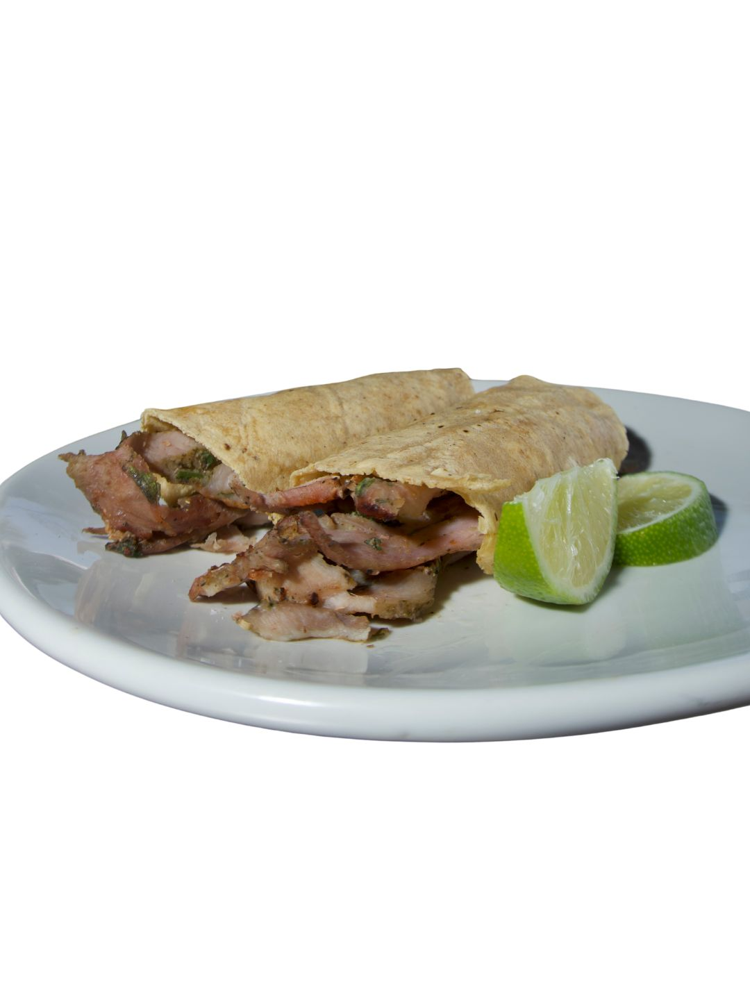
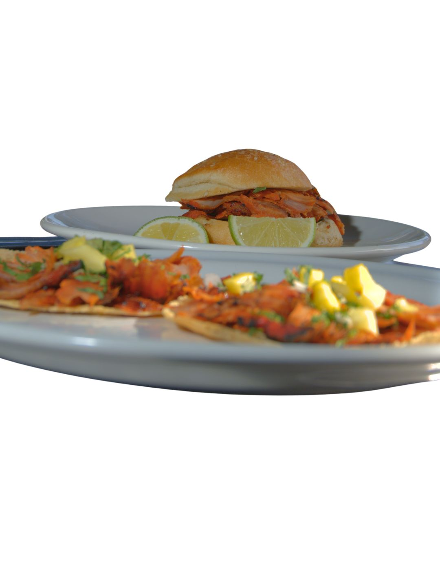

Taquería poblana · Av. Juárez
Taquería poblana · Av. Juárez
Brasa viva, sabor que se queda.
Árabes, al pastor, asada y arrachera — al carbón y recién hechos, como manda Puebla.
Taquería poblana · Av. Juárez
Árabes, al pastor, asada y arrachera — al carbón y recién hechos, como manda Puebla.
Cada orden se prepara al momento, sobre carbón. Esto es lo que sale de nuestra cocina todos los días.




Estamos sobre la Av. Juárez, en pleno corazón de Puebla. Llega, llama o haz tu pedido por WhatsApp y lo tenemos listo.
Ordenar por WhatsApp